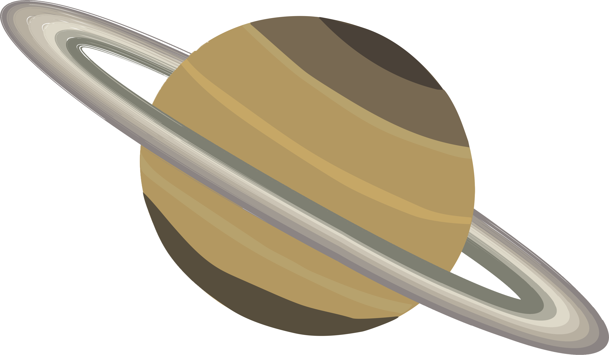

Saturn

Intro
Saturn is the sixth planet from the Sun and the second largest planet in our solar system. Adorned with thousands of beautiful ringlets, Saturn is unique among the planets. It is not the only planet to have rings—made of chunks of ice and rock—but none are as spectacular or as complicated as Saturn's. Like fellow gas giant Jupiter, Saturn is a massive ball made mostly of hydrogen and helium.Fun Facts
- Mini solar system: Saturn has 53 known moons with an additional 29 moons awaiting confirmation of their discovery—that is a total of 82 moons.
- Rare Destination: Few missions have visited Saturn: Pioneer 11 and Voyagers 1 and 2 flew by; But Cassini orbited Saturn 294 times from 2004 to 2017.
- Lifeless Behemoth: Saturn cannot support life as we know it, but some of Saturn's moons have conditions that might support life.
Next
Back